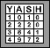

| Instructions to Use the Population Model Program |
Introduction --
This program gives you a birds-eye view of a field where you can plant oak trees. By letting time pass the trees will grow to form a forest of trees. You can see the trees evolve and grow from above until they become full grown. You can also incorporate two different animal species, gray squirrels and red-tailed hawks, by deciding both the quantities of each as well as the year when they immigrate into the forest area. You can bring up a setup panel to define the conditions for the model and then simply clicks on the different control buttons below the forest field to advance or stop the time and to bring up a table and/or a chart to display the data.
Time resolution --
The time resolution is in years, which means that when you advance time it jumps a whole year with each click. It is as if you flew over the forest once a year, took a picture, and counted all the different items as part of the data collection. This data is the one presented in both the table and the graphs described below.
The following figure shows the image of the complete panel displayed by the model program:
The brown panel in the figure represents an area of 600 by 250 ft or 150,000 ft2, which is close to three acres. It is in this piece of land that you can decide how many oak tree seedlings to plant. Since the spread of the crown of a full-grown oak tree can reach 50 ft in diameter, the maximum number of oak trees that can be planted is 60. The view that you get in this model is what is referred to as a birds-eye view; as if you were high above the field, at about one mile1 high.
Scale --
Let's talk a little bit about the scale. Computer screens have very small pixels, like little dots, used to paint images and text. If you look at some images very close you might be able to see the individual pixels. The scale used in this program is approximately one pixel for every foot, so the diameter of the crown of the full-grown tree is 50 pixels (or 50 feet). Using this scale you can imagine that the squirrels are going to be very, very small. In fact, they are represented using a single gray pixel. They might be difficult to spot, so watch carefully. The red-tailed hawks, even though also small, are very easy to spot. They are drawn as:
In the previous figure, each of the seven squares is represented on the program by a single pixel. As a comparison, the squares above are drawn as 23 by 23 pixels squares. Therefore, a hawk's wing span in the model is five feet.
As you can see from the previous picture there are 8 buttons that can be used to control the program. The following table describes the actions associated with each of them:
Control Button Description Clicking on this setup button will take you to a screen where you define things like number of trees, number of squirrels and year when they immigrate into the area, etc. Detailed descriptions are included in the Model Setup section below. Clicking on this play button will advance time by one year. Right after setting the model conditions the year gets reset to year zero. This stop button will stop time after it gets running with the fast forward button ( ). It can then be restarted with either the play or the fast forward button. Use this reset button to reset the time to year zero. That will change the display as well as the table and chart to reflect the system's state at the beginning of time. Clicking on this button when time is continuously running (after using the fast forward button ) will stop and reset the model. The fast forward button is used to get the time running in a continuous mode. It will advance one year every 2 or 3 seconds and will update the forest view as well as the table and chart based on the conditions. You can use the stop button to stop the time. The evolution of the simulation stops when it reaches year 270. Click on this graphs button to bring up a separate window displaying plots of the data over time. The plots include number of acorns, squirrels and hawks. Clicking on this button again or on the window's X will make the graphs' window go away. The section Reading the Graphs below gives you more details on how this window works and how to interpret the different plots.  Use this table button to bring up a separate window that presents the data accurately in a nice table format. The table includes the year in the first column followed by the number of acorns, squirrels and hawks. Clicking on this button again or on the window's X will make the table's window go away. The section Reading the Table below gives you more details on how this window works. This help button brings up this exact document into your browser window. In the lower right corner there is a small white area where the state of the model is always being displayed. By checking the data in that area you can always find out the simulated year (anywhere from zero to 270), and the number of acorns, squirrels, and hawks. The first thing that you need to do after bringing up the program is to set it up, which means to define the conditions that it will use to run the simulation. After clicking the setup button the following menu will be displayed:
You simply need to select options for any or all of the different items, which are:
and click on the OK button to save the selections. That will automatically reset the time to year zero and bring you back to the normal window. This time there will be small seedlings corresponding to the number of trees selected. Once back on this forest-view window you can step forward the time by a single year (with the play button) or get the time running continuously (with the fast forward button) year after year.
Two other options available within the setup menu are to (a) Cancel out, which ignores any changes and gets you back to the normal window without resetting the time and (b) Reset, which resets all the selections to its initial state and leaves you in the setup menu where you can click on the OK button to go back to the normal window.
The next three pages in this lesson give directions on how to set it up to be able to model different situations and conditions.
As described in the controls table above, clicking on the table button brings up the table with all the data. Clicking on the button again or on the window's X will make the window go away. You can bring the table up and make it go away as needed. The table can also be up as the program is running, and it will be updated accordingly. The table and its data are always kept in synch with the actual model.
The main advantage of the table is that it presents the data with precision. You can find out exactly how many acorns were produced or how many squirrels were alive on any given year. The disadvantage is that it is not that easy to visualize how the data evolves or how the different columns relate to each other. That is why graphs, described in the next section, are also included as part of the model.
Everything that was described for the table window in the previous section applies to the graph window. Of course, the big difference is that the graphs only let you read the data approximately, but let you visualize it very easily. You can see the dependency of one curve on the others, see how they each evolve over time, etc.
Several important things need to be mentioned about the graph. The graphs plot time in years on the X-axis (the horizontal one). One nice feature is that the scale of the X-axis gets automatically readjusted depending on the amount of data. When you have data for a few years on the chart, the dots are spread apart. However, when the amount of data increases, as the model continues evolving in time, the scale changes to bring the points closer together and fit more on the same space.
On the Y-axis (the vertical one) the graph plots three variables or three sets of data: the number of acorns, squirrels, and hawks. It should be obvious that each of the three variables needs different scales as the numbers of acorns go into the thousands while the number of hawks remains in the low tens. Do you see the problem? A simple way to solve this is to have one scale in percent from the total and annotate the three different totals in the chart. What this means is that the Y-axis goes from 0% to 100% for each of the variables. If you know that 100% of the number of acorns is 7,000 and you see a point representing the number of acorns at about 35%, then you can read the number as 7,000 x 0.35 = 2,450 acorns. The next example uses the following graph:
To figure out how many hawks the single dot on the graph represents, you multiply 30 (which represents 100% of the hawks) by 0.25 (because the point is at 25%) to obtain about 7 or 8 hawks. Of course you can also visually estimate the number.
Depending on the browser being used, the window with the graphs might not show the Max values at the bottom initially. If that is the case you simply have to enlarge the window a bit by pulling the bottom margin down.
One final note, the curves might sometimes look very steep, i.e. going up or down very rapidly, but remember that each consecutive dot or point in the chart is really one year or 365 days apart.
Remember these important things:
- For the exact numbers you can always go to the table.
- Each of the three different curves has a different scale as indicated by the Max values. If the point for the hawks is very close to the point for the acorns, that doesn't mean that the values are close!
- The purpose of having the three curves on the same graph is to see how they relate to each other and how they evolve over time.
[Note 1] -- If you think that the height to be able to see this field as you see it in this program is not one mile, please let me know.
Last Updated:
Arcytech
Java Home
Page
Provide
Feedback